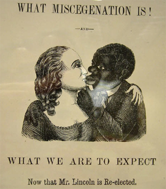

|
Miscegenation is a term invented in the 19th century to describe interracial
sexual relations and/or marriage, usually between a black person and a white
person. The practice first became a social and political issue in the early
seventeenth century, two centuries before the Civil War, when Maryland and
Virginia passed laws banning marriages between whites and people of other races.
Many other states followed suit, although miscegenation laws were not always
enforced.
|

This pamphlet, which plays on racist fears
of black-white intermarriage, was created to hurt the Republican
Party in 1864.
|
Generally, those who opposed miscegenation, or race mixing, were most
concerned with relations between white women and black men. In part this was
because a person's legal status derived from their mother. Thus, the child of a
white woman and an enslaved African-American man was born free. Such children,
free citizens despite having African blood, were perceived as a threat to the
strict racial order of society. Children of enslaved African-American women and
white men, on the other hand, were born slaves and thus posed no threat. Another
reason that sexual contact between white men and black women was more tolerable
was that it was much more common. Most of the men who owned slaves felt that it
was perfectly acceptable for them to use slave women as concubines, even though
it was almost invariably against the woman's will.
Prior to the 1860s, the term used to describe interracial relationships was
amalgamation. The term miscegenation did not come into use until the election of
1864. David Croly and George Wakeman of the New York World, a Democratic
newspaper, published a hoax pamphlet designed to convince people that
Republicans favored interracial marriage. Their goal was to play on American
fears that the Republicans were planning to overturn the racial status quo in
the country. The ploy largely didn't work, although the fact that Croly and
Wakeman thought it would is indicative of the state of race relations in
mid-19th century America.
After the war, miscegenation became largely a southern issue. In the 1870s,
the remaining northern states with miscegenation laws repealed them, while most
southern states passed new laws with increasingly harsh penalties for
interracial marriage. Republicans in Congress cried foul, and the laws were
temporarily repealed before being put back on the books once Reconstruction was
over. These laws were upheld in a series of Supreme Court decisions in the
1880s, notably Pace v. Alabama (1883). Meanwhile, many southerners
dispensed with such legal niceties, and simply hanged black men who were accused
of sexual relations with a white woman. While the hangings eventually ceased,
the attitudes behind them lasted well into the 20th century. When the Supreme
Court reversed itself and declared miscegenation laws unconstitutional in
Loving v. Alabama (1967), 16 Southern states still had such statutes on
the books.
Source: Joan Waugh, ed., Facts on File Encyclopedia of American
History: Civil War and Reconstruction, 1856 to 1869 (New York: Facts on
File, 2003), 233-34.
|